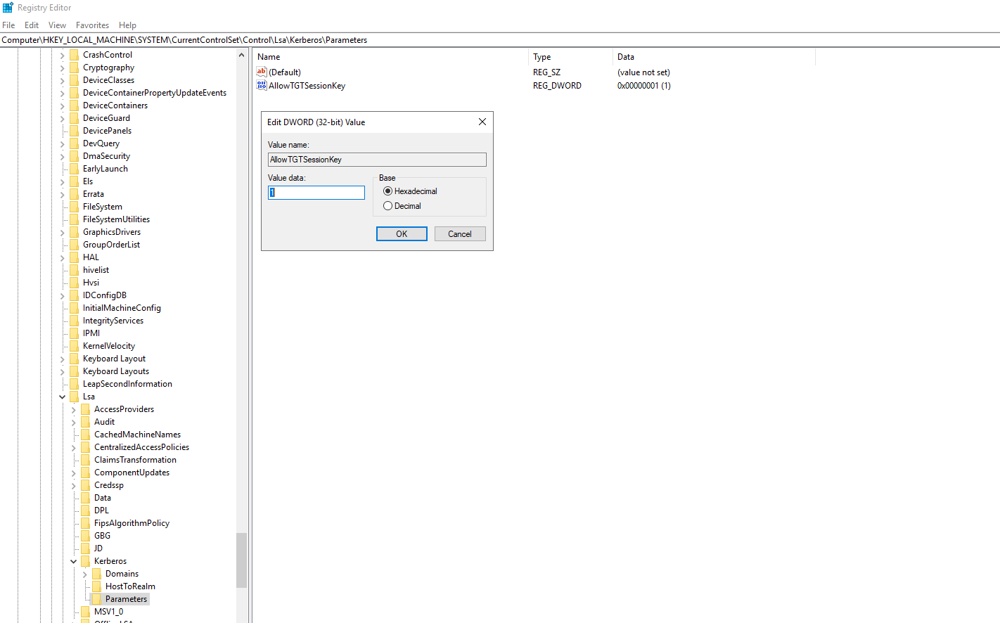

Install hdfs spark cluster clients For windows¶
1. Download and install jdk¶
Spark requires jdk to run, so we need to install jdk first. Check your current system situation.
Open the command line by clicking Start > type cmd > click Command Prompt.
java --version
# you should see something like
If java is installed, you should see the version, otherwise you should see commnad not found.
Choose the version that your spark requires: Spark 3.* requires JDK 8 or 11. In this tutorial, we choose JDK 11 (LTS).
You can use this link to download it from windows official website. JDK is not cross-platform, the openjdk for Linux does not work on Windows server. You need to download the version complied for Windows.
After installation, rerun
java --version
We don't recommend you to use .exe installer. We recommend you to use .zip By default, the installer will set java home folder at
C:\Program Files\Java\jdk-11.0.17
@echo off
echo JAVA_HOME is: %JAVA_HOME%
echo Path contains Java:
echo %PATH% | findstr /i "java"
java -version
echo If above shows version → ready for Hadoop client setup
pause
2. Download and install hadoop¶
You can find all hadoop releases on this website. But there is no official
release for Windows. But someone has done a release for windows. You need to download the winutils for hadoop.
You can go to this github page to download the binary
Extract the winuitls zip, then copy all the files in bin/ (winutils.exe, hadoop.dll, hdfs.dll, etc) binaries
to your original hadoop/bin.
Then you need to set up two env vars:
- HADOOP_HOME with value 'path of the hadoop binary' and add %HADOOP_HOME%\bin to your path.
- HADOOP_CONF_DIR with value like %HADOOP_HOME%\etc\hadoop
If your path is set up correctly, you should be able to run below command from a cmd windows
hdfs dfs -ls /
2.1 Configure hadoop¶
For hadoop client to work, you need to configure three config files: - core-site.xml - hdfs-site.xml - yarn-site.xml
Below is an example of core-site.xml
<?xml version="1.0" encoding="UTF-8"?>
<?xml-stylesheet type="text/xsl" href="configuration.xsl"?>
<configuration>
<property>
<name>fs.defaultFS</name>
<value>hdfs://deb13-spark1.casdds.casd:9000</value>
</property>
<!-- Enable hadoop kerberos authentication -->
<property>
<name>hadoop.security.authentication</name>
<value>kerberos</value>
</property>
<property>
<name>hadoop.security.authorization</name>
<value>true</value>
</property>
<!-- AD principal → local user mapping -->
<property>
<name>hadoop.security.auth_to_local</name>
<value>
RULE:[2:$1@$0](.*@CASDDS\.CASD)s/@CASDDS\.CASD// RULE:[1:$1] DEFAULT
</value>
<description>Mapping du principal Kerberos vers le nom d’utilisateur local.</description>
</property>
</configuration>
You don't need group mapping in core-site.xml for windows
<?xml version="1.0" encoding="UTF-8"?>
<?xml-stylesheet type="text/xsl" href="configuration.xsl"?>
<configuration>
<!-- HDFS permissions -->
<property>
<name>dfs.permissions.enabled</name>
<value>true</value>
</property>
<!-- NameNode Kerberos identity -->
<property>
<name>dfs.namenode.kerberos.principal</name>
<value>hdfs/deb13-spark1.casdds.casd@CASDDS.CASD</value>
</property>
<!-- SPNEGO authentication for Web UI -->
<property>
<name>dfs.web.authentication.kerberos.principal</name>
<value>HTTP/deb13-spark1.casdds.casd@CASDDS.CASD</value>
</property>
<!-- SASL encryption for block transfer -->
<property>
<name>dfs.data.transfer.protection</name>
<value>authentication</value>
</property>
<!-- Non privileged ports -->
<property>
<name>dfs.https.port</name>
<value>50470</value>
</property>
<property>
<name>dfs.secondary.https.port</name>
<value>50490</value>
<description>Port HTTPS pour le secondary-namenode.</description>
</property>
<property>
<name>dfs.https.address</name>
<value>deb13-spark1.casdds.casd:50470</value>
<description>Adresse HTTPS d’écoute du Namenode.</description>
</property>
<property>
<name>dfs.encrypt.data.transfer</name>
<value>true</value>
</property>
<!-- Explicitly force HTTP -->
<property>
<name>dfs.http.policy</name>
<value>HTTPS_ONLY</value>
</property>
</configuration>
<?xml version="1.0" encoding="UTF-8"?>
<?xml-stylesheet type="text/xsl" href="configuration.xsl"?>
<configuration>
<property>
<name>yarn.resourcemanager.hostname</name>
<value>deb13-spark1.casdds.casd</value>
<description>Hostname of the ResourceManager.</description>
</property>
<property>
<name>yarn.nodemanager.aux-services</name>
<value>mapreduce_shuffle</value>
<description>Auxiliary services for NodeManager.</description>
</property>
<property>
<name>yarn.nodemanager.aux-services.mapreduce.shuffle.class</name>
<value>org.apache.hadoop.mapred.ShuffleHandler</value>
</property>
<!-- kerberos config: ResourceManager identity -->
<property>
<name>yarn.resourcemanager.principal</name>
<value>hdfs/deb13-spark1.casdds.casd@CASDDS.CASD</value>
</property>
<!-- kerberos config: Web UI SPNEGO -->
<property>
<name>yarn.resourcemanager.webapp.spnego-principal</name>
<value>HTTP/deb13-spark1.casdds.casd@CASDDS.CASD</value>
</property>
<!-- HTTPS -->
<property>
<name>yarn.http.policy</name>
<value>HTTPS_ONLY</value>
</property>
</configuration>
2.2 Enable kerberos for hadoop¶
By default, Windows server uses native LSA(Local Security Authority) to manage kerberos tickets and the native Windows ticket cache
But the hdfs client does not use the LSA by default. As a result, you need to configure the HDFS client to look at
the Windows logon session instead of a standard Kerberos credential cache file (ccache).
You need to do:
1. enable allowtgtsessionkey in the Windows Registry
2. configure kerberos client(C:\ProgramData\MIT\Kerberos5\krb5.ini)
3. configure the JAAS Login File.
4. Edit hadoop-env.cmd to ensure hdfs client to use the right config
2.2.1 Enable allowtgtsessionkey in the Windows Registry¶
To enable allowtgtsessionkey in the Windows Registry, you need to do the following steps:
1. Open regedit.
2. Navigate to: HKEY_LOCAL_MACHINE\System\CurrentControlSet\Control\Lsa\Kerberos\Parameters.
3. Check/Create a new entry(DWORD value): allowtgtsessionkey.
4. Set the value to 1.
5. Restart the server for this change to take effect.
If you see another registry entry
ProtectYourTGSinHKEY_LOCAL_MACHINE\System\CurrentControlSet\Control\Lsa\Kerberos\Parametersand the value is set to 1, you need to delete it or change it to 0.
The below figure shows an example of registration key

2.2.2 configure kerberos client¶
By default, you can find the kerberos client config file at C:\ProgramData\MIT\Kerberos5\krb5.ini. Normally you don't
need to modify it.
Below is a template which you can follow
[libdefaults]
default_realm = YOUR_AD_REALM.COM
# This is crucial for Windows LSA compatibility
default_tkt_enctypes = aes256-cts-hmac-sha1-96 aes128-cts-hmac-sha1-96 rc4-hmac
default_tgs_enctypes = aes256-cts-hmac-sha1-96 aes128-cts-hmac-sha1-96 rc4-hmac
forwardable = true
[realms]
YOUR_AD_REALM.COM = {
kdc = your_domain_controller.your_ad_realm.com
admin_server = your_domain_controller.your_ad_realm.com
}
[domain_realm]
.your_ad_realm.com = YOUR_AD_REALM.COM
your_ad_realm.com = YOUR_AD_REALM.COM
for example in our case, it will be
[libdefaults]
default_realm = CASDDS.CASD
dns_lookup_kdc = true
dns_lookup_realm = true
# This is crucial for Windows LSA compatibility
default_tkt_enctypes = aes256-cts-hmac-sha1-96 aes128-cts-hmac-sha1-96 rc4-hmac
default_tgs_enctypes = aes256-cts-hmac-sha1-96 aes128-cts-hmac-sha1-96 rc4-hmac
forwardable = true
[realms]
CASDDS.CASD = {
kdc = 10.50.5.64
admin_server = 10.50.5.64
}
[domain_realm]
.casdds.casd = CASDDS.CASD
casdds.casd = CASDDS.CASD
2.2.3 configure the JAAS Login File.¶
You need a JAAS (Java Authentication and Authorization Service) configuration file to tell the HDFS client to use
the kerberos ticket cache generated by LSA. You need to create a file named gss-jaas.conf:
For now, I stored the conf file in C:\Users\pliu\Documents\java_krb_conf\gss-jaas.conf
Below is a minimum version of the gss-jaas.conf
Client {
com.sun.security.auth.module.Krb5LoginModule required
useTicketCache=true
doNotPrompt=true
/* useTicketCache with no ticketCache path defaults to LSA on Windows */
ticketCache="";
};
2.2.4 Edit hadoop-env.cmd¶
To ensure the hdfs client uses the right config, we need to add the below lines at the end of the file
%HADOOP_HOME%\etc\hadoop\hadoop-env.cmd
@echo off
... ...
@rem A string representing this instance of hadoop. %USERNAME% by default.
set HADOOP_IDENT_STRING=%USERNAME%
set HADOOP_OPTS=%HADOOP_OPTS% -Dsun.security.jgss.native=true
set HADOOP_OPTS=%HADOOP_OPTS% -Dsun.security.jgss.lib="sspi_bridge.dll"
set HADOOP_OPTS=%HADOOP_OPTS% -Djavax.security.auth.useSubjectCredsOnly=false
set HADOOP_OPTS=%HADOOP_OPTS% -Djava.security.krb5.conf="C:\ProgramData\MIT\Kerberos5\krb5.ini"
set HADOOP_OPTS=%HADOOP_OPTS% -Djava.security.auth.login.config="C:\Users\pliu\Documents\java_krb_conf\gss-jaas.conf"
@rem Optional: Enable Kerberos debugging if you encounter GSS errors
set HADOOP_OPTS=%HADOOP_OPTS% -Dsun.security.krb5.debug=true
Setting useSubjectCredsOnly to false tells Java to look outside its own internal "Subject" context and check
the underlying operating system's ticket cache (the LSA).
The last line is to enable debug mode for krb. When enabled, you should see all the krb communication details between the hdfs client and server
Variable Persistence and scope, the env var declared in %HADOOP_HOME%\etc\hadoop\hadoop-env.cmd file will only
persist for the duration of the command prompt session where you run your HDFS commands.
We don't recommend you to add these env variables as the System Environment Variables via the Windows Control Panel.
2.3 Run the terminal as Administrator issue.¶
When you open a power-shell as standard users, and run hdfs dfs -ls \. You should see the below error message
...
LSA: Error calling function Protocol status: 1312
LSA: A specified logon session does not exist. It may already have been terminated.
...
The above two lines is a classic
Windows Kerberos "security wall.". The Java process is being denied access to the TGT because of how the Windows session is scoped. If yourun a terminal as Administrator, it will work.
It is a common frustration: UAC (User Account Control) in Windows effectively "strips" the Kerberos
delegation tokens from a standard user's session to prevent unauthorized processes from acting as that user.
To allow a standard (non-admin) user HDFS client to access the LSA without elevation, you need to address the
Logon Session visibility.
There are three possible solutions: - run terminal as Administrator:
not possible for us- use keytab instead of LSA krb cache:not possible for us- disable UAC split token:
2.3.1 Disable UAC split token¶
Windows has another protection mechanism. For the users who have the local admin right, Windows uses UAC to split credentials between admin session and normal session. When user running without admin rights, the user can't access credentials in the admin session.
On servers running Hadoop clients, you need to change the registry value
# find the below registry key
HKLM\SOFTWARE\Microsoft\Windows\CurrentVersion\Policies\System
# change the value to 0
EnableLUA = 0
You need to reboot the server to make this take effet This config will allow windows create
one logon sessionand onekerberos cache
2.4 Debug¶
Check hadoop config values
# get hadoop conf value general form
hdfs getconf -confKey <conf-key-name>
# for example, get namenode principal
hdfs getconf -confKey dfs.namenode.kerberos.principal
Enable mode debug for kerberos in %HADOOP_HOME%\etc\hadoop\hadoop-env.cmd. Check kerberos log during
hdfs client operations.
set HADOOP_OPTS=%HADOOP_OPTS% -Dsun.security.krb5.debug=true
3. Blocking situation¶
If you can't enable allowtgtsessionkey in the Windows Registry, the hdfs client will never work in
kerberos mode.
The problem is how hadoop interact with LSA.
Below is an example of the DEBUG log during hadoop krb authentication using LSA
hdfs dfs -ls /
Java config name: null
LSA: Found Ticket
LSA: Made NewWeakGlobalRef
LSA: Found PrincipalName
LSA: Made NewWeakGlobalRef
LSA: Found DerValue
LSA: Made NewWeakGlobalRef
LSA: Found EncryptionKey
LSA: Made NewWeakGlobalRef
LSA: Found TicketFlags
LSA: Made NewWeakGlobalRef
LSA: Found KerberosTime
LSA: Made NewWeakGlobalRef
LSA: Found String
LSA: Made NewWeakGlobalRef
LSA: Found DerValue constructor
LSA: Found Ticket constructor
LSA: Found PrincipalName constructor
LSA: Found EncryptionKey constructor
LSA: Found TicketFlags constructor
LSA: Found KerberosTime constructor
LSA: Finished OnLoad processing
Native config name: C:\Windows\krb5.ini
Loaded from native config
Java config name: null
Native config name: C:\Windows\krb5.ini
Loaded from native config
>>> KdcAccessibility: reset
>>> KdcAccessibility: reset
>>>KinitOptions cache name is C:\Users\pliu\krb5cc_pliu
>> Acquire default native Credentials
Using builtin default etypes for default_tkt_enctypes
default etypes for default_tkt_enctypes: 18 17 20 19.
LSA: Found KrbCreds constructor
LSA: Got handle to Kerberos package
LSA: Response size is 1847
LSA: TICKET SessionKey KeyType is 18
LSA: Valid etype found: 18
LSA: Principal domain is CASD.FR
LSA: Name type is 1
LSA: Name count is 1
LSA: Principal domain is CASD.FR
LSA: Name type is 2
LSA: Name count is 2
LSA: Session key all zero. Stop.
>>> Found no TGT's in LSA
2026-04-01 14:11:55,166 WARN ipc.Client: Exception encountered while connecting to the server server1.casd.fr/192.168.38.11:9000
org.apache.hadoop.security.AccessControlException: Client cannot authenticate via:[TOKEN, KERBEROS]
The hdfs command relies on Hadoop’s UserGroupInformation (UGI) class. UGI insists on performing a JAAS Login
to construct a Java Subject by calling com.sun.security.auth.module.Krb5LoginModule. This Java Subject
will be responsible to perform kerberos ticket exchanges inside JVM.
As a result, the Krb5LoginModule tries to physically "scoop" the TGT and the Session Key out of the LSA to manage them inside the JVM.
As the AllowTgtSessionKey = 0, Windows returns the ticket but zeroes out the session key.
Java sees all zeros in the session key, it considers the ticket "not valid". That's why you see the logs:
LSA: Session key all zero. Stop. >>> Found no TGT's in LSA
Even though I have a working example here by using sspi_bridge.dll via GSSManager.
It will not work for the hdfs client. Because the working java example delegates the kerberos ticket
operation to Windows LSA via SSPI. But hdfs try to access and extract the TGT via SSPI.